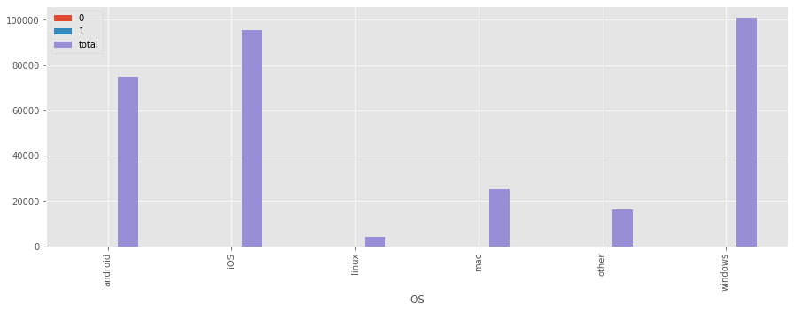
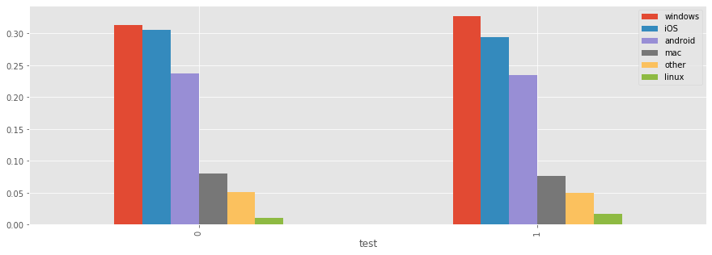
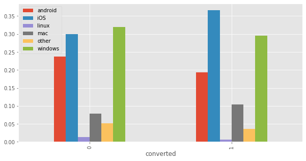
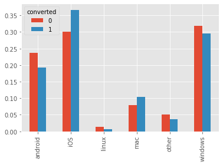

Background: This notebook aims to evaluate whether a pricing test running on the site has been successful. Specifically, we will invesigate:
- Should the company sell its software for 39 or 59?
- The VP of Product is interested in having a holistic view into user behavior, especially focusing on actionable insights that might increase conversion rate. What are your main findings looking at the data?
- The VP of Product feels that the test has been running for too long and he should have been able to get statistically significant results in a shorter time. Do you agree with her intuition? After how many days you would have stopped the test? Please, explain why.
Index
- Load the data
- Check whether test/control group is randomly splitted?
- Answer question 1
- Answer question 2
import numpy as np
import pandas as pd
import scipy.stats as ss
from sklearn.preprocessing import LabelEncoder
from sklearn.feature_selection import chi2,f_classif
from sklearn.tree import DecisionTreeClassifier,export_graphviz
import matplotlib.pyplot as plt
plt.style.use('ggplot')
%matplotlib inline
seed = 999Load the data
testdata = pd.read_csv("test_results.csv",index_col="user_id")
# users contains [id,city,country,lat,long]
# and all 'country' column is USA
# I don't think users can provide useful information to the problems, so just ignore user_table.csv
# users = pd.read_csv("user_table.csv")
# some time has 60 seconds/minute, which cannot be processed by to_datetime
# if given more time, I will fix this incorrect format
# testdata["timestamp"] = pd.to_datetime(testdata.timestamp)
# rename to short names, make it easier to display
testdata.rename(columns={'operative_system':'OS'},inplace=True)testdata.head()| timestamp | source | device | OS | test | price | converted | |
|---|---|---|---|---|---|---|---|
| user_id | |||||||
| 604839 | 2015-05-08 03:38:34 | ads_facebook | mobile | iOS | 0 | 39 | 0 |
| 624057 | 2015-05-10 21:08:46 | seo-google | mobile | android | 0 | 39 | 0 |
| 317970 | 2015-04-04 15:01:23 | ads-bing | mobile | android | 0 | 39 | 0 |
| 685636 | 2015-05-07 07:26:01 | direct_traffic | mobile | iOS | 1 | 59 | 0 |
| 820854 | 2015-05-24 11:04:40 | ads_facebook | web | mac | 0 | 39 | 0 |
Check whether test and control group is randomly splitted?
X = testdata.copy()
del X['timestamp']
# to use sklearn to check feature importance, we must convert string values to numbers
src_label_encoder = LabelEncoder()
dev_label_encoder = LabelEncoder()
os_label_encoder = LabelEncoder()
X["source"] = src_label_encoder.fit_transform(testdata.source)
X["device"] = dev_label_encoder.fit_transform(testdata.device)
X["OS"] = os_label_encoder.fit_transform(testdata.OS)X.head()| source | device | OS | test | price | converted | |
|---|---|---|---|---|---|---|
| user_id | ||||||
| 604839 | 3 | 0 | 1 | 0 | 39 | 0 |
| 624057 | 8 | 0 | 0 | 0 | 39 | 0 |
| 317970 | 0 | 0 | 0 | 0 | 39 | 0 |
| 685636 | 5 | 0 | 1 | 1 | 59 | 0 |
| 820854 | 3 | 1 | 3 | 0 | 39 | 0 |
run Chi-Square test to see which factor impact the splitting between test/control group
colnames = ["source","device","OS"]
ch2values,pvalues = chi2(X.loc[:,colnames],X["test"])
pd.DataFrame({'chi2_value':ch2values,'pvalue':pvalues},index = colnames).sort_values(by='pvalue')| chi2_value | pvalue | |
|---|---|---|
| OS | 83.085986 | 7.856065e-20 |
| device | 44.366335 | 2.723301e-11 |
| source | 0.924742 | 3.362329e-01 |
from above result, we know that the splitting between test/control groups aren’t random. OS and device has great impact on the split.
def calc_ratios(s):
d = s.value_counts(normalize=True)
d['total'] = s.shape[0]
return d
test_ctrl_by_os = testdata.groupby('OS')['test'].apply(calc_ratios).unstack()
test_ctrl_by_os| 0 | 1 | total | |
|---|---|---|---|
| OS | |||
| android | 0.643358 | 0.356642 | 74935.0 |
| iOS | 0.647934 | 0.352066 | 95465.0 |
| linux | 0.533736 | 0.466264 | 4135.0 |
| mac | 0.652422 | 0.347578 | 25085.0 |
| other | 0.647865 | 0.352135 | 16204.0 |
| windows | 0.629764 | 0.370236 | 100976.0 |
test_ctrl_by_os.plot(kind='bar',figsize=(15,5))<matplotlib.axes._subplots.AxesSubplot at 0x18b2f2c8c50>
os_by_test_ctrl = testdata.groupby('test')['OS'].apply(lambda s: s.value_counts(normalize=True)).unstack()
os_by_test_ctrl | windows | iOS | android | mac | other | linux | |
|---|---|---|---|---|---|---|
| test | ||||||
| 0 | 0.313678 | 0.305115 | 0.237807 | 0.080729 | 0.051784 | 0.010887 |
| 1 | 0.327729 | 0.294636 | 0.234280 | 0.076434 | 0.050021 | 0.016901 |
os_by_test_ctrl.plot(kind='bar',figsize=(15,5))<matplotlib.axes._subplots.AxesSubplot at 0x18b2f3647f0>
we can see that OS distribution in test/control groups are very different.
the experiment claim that ‘66% of the users have seen the old price (39), while a random sample of 33% users a higher price (59).’, but users from Linux don’t obey such rule, but 53% go to control group, 47% go to test group.
Answer question 1
Should the company sell its software for 39 or 59?
revenues = testdata.groupby(by="test").apply(lambda df: df.price * df.converted)
ctrl_revenues = revenues[0]
test_revenues = revenues[1]def group_statistics(df):
return pd.Series({'n_users': df.shape[0],
'convert_rate': df.converted.mean(),
'mean_revenue': (df.price * df.converted).mean()})
testdata.groupby('test').apply(group_statistics)| n_users | convert_rate | mean_revenue | |
|---|---|---|---|
| test | |||
| 0 | 202727.0 | 0.019904 | 0.776734 |
| 1 | 114073.0 | 0.015543 | 0.916843 |
we are going to perform a t-test to test whether the test group’s average revenue is higher than control group’s average revenue
- H0: test group’s average revenue equal to control group’s average revenue
- HA: test group’s average revenue is higher than control group’s average revenue
ttest_result = ss.ttest_ind(test_revenues,ctrl_revenues,equal_var=False)
# ttest_ind is a two tailed
# since our HA is test_mean > ctrl_mean, so we need to divide by 2
ttest_result.pvalue/2 7.703749302339191e-09since the p-value is much smaller than 0.05 threshold, so we reject H0, and accept HA, that is, test group’s average revenue is significantly higher than control group’s average revenue.
but due to OS distribution aren’t the same between test/control groups, price isn’t the only difference between test/control groups, so we cannot contribute the increase in average revenue to price.
the experiment design fails, I cannot answer decide whether we can sell software to all users in 59 dollars. I suggest
- find the reason why linux users have different representation ratio than other OS.
- then run the experiment again, make sure price is the only difference between test and control group
- then run t-test again, to see whether the average revenue is significantly improved.
- then I can draw the conclusion.
Answer question 2
The VP of Product is interested in having a holistic view into user behavior, especially focusing on actionable insights that might increase conversion rate. What are your main findings looking at the data?
# X is the data after being transformed by LabelEncoder
X.tail()# glance the data| source | device | OS | test | price | converted | |
|---|---|---|---|---|---|---|
| user_id | ||||||
| 17427 | 3 | 1 | 5 | 0 | 39 | 0 |
| 687787 | 5 | 1 | 5 | 0 | 39 | 0 |
| 618863 | 1 | 1 | 3 | 0 | 39 | 0 |
| 154636 | 6 | 0 | 0 | 0 | 39 | 0 |
| 832372 | 3 | 0 | 0 | 1 | 59 | 0 |
Chi-Square test
I first run Chi-Square test to see which feature greatly impact converted or not
colnames = ["source","device","OS",'price']
ch2values,pvalues = chi2(X.loc[:,colnames],X["converted"])
pd.DataFrame({'chi2_value':ch2values,'pvalue':pvalues},index = colnames).sort_values(by='pvalue')| chi2_value | pvalue | |
|---|---|---|
| price | 150.992849 | 1.051844e-34 |
| OS | 7.642955 | 5.699447e-03 |
| source | 2.373391 | 1.234187e-01 |
| device | 0.729490 | 3.930485e-01 |
Chi-Square test tells us,
- Price and OS are two main factor which impact converted or not.
- Source and Device don’t impact conversion rate that much.
How price affects conversion?
converted_by_price= testdata.groupby("price")['converted'].apply(lambda s: s.value_counts(normalize=True)).unstack()
converted_by_price| 0 | 1 | |
|---|---|---|
| price | ||
| 39 | 0.980111 | 0.019889 |
| 59 | 0.984430 | 0.015570 |
Users see 59 dollar has lower conversion rate than users see 39 dollars.
How OS affects conversion?
converted_by_os = testdata.groupby("OS")['converted'].apply(lambda s: s.value_counts(normalize=True)).unstack()
converted_by_os.sort_values(by=1,ascending=False)| 0 | 1 | |
|---|---|---|
| OS | ||
| mac | 0.976002 | 0.023998 |
| iOS | 0.977678 | 0.022322 |
| windows | 0.983045 | 0.016955 |
| android | 0.985067 | 0.014933 |
| other | 0.987040 | 0.012960 |
| linux | 0.991778 | 0.008222 |
os_by_converted = testdata.groupby("converted")['OS'].apply(lambda s: s.value_counts(normalize=True)).unstack()
os_by_converted| android | iOS | linux | mac | other | windows | |
|---|---|---|---|---|---|---|
| converted | ||||||
| 0 | 0.237357 | 0.300117 | 0.013187 | 0.078725 | 0.051429 | 0.319185 |
| 1 | 0.192665 | 0.366908 | 0.005854 | 0.103650 | 0.036157 | 0.294766 |
os_by_converted.plot(kind='bar',figsize=(10,5))<matplotlib.axes._subplots.AxesSubplot at 0x18b2f403e80>
os_by_converted.transpose().plot(kind='bar')<matplotlib.axes._subplots.AxesSubplot at 0x18b2f521668>
from above result, we can see
- Mac and iOS users have higher conversion rate than users from other OS.
- Linux users have lower conversion rate than users from other OS.
Model by Decision Tree
I will build a Decision Tree to get feature importance. Since the question is asking about “actionable insight” other than a model which precisely predict converted or not, so I will just fit a shallow Decision Tree on all the data, without giving out model’s performance on test set.
testdata.sample(10)# glance the data| timestamp | source | device | OS | test | price | converted | |
|---|---|---|---|---|---|---|---|
| user_id | |||||||
| 523888 | 2015-04-24 11:44:22 | ads-yahoo | mobile | iOS | 1 | 59 | 0 |
| 42215 | 2015-05-22 05:48:48 | ads-yahoo | mobile | iOS | 1 | 59 | 0 |
| 747474 | 2015-04-04 03:09:29 | ads_facebook | mobile | iOS | 1 | 59 | 0 |
| 340105 | 2015-04-30 09:43:25 | direct_traffic | web | linux | 0 | 39 | 0 |
| 43494 | 2015-03-06 08:12:10 | seo-bing | mobile | iOS | 0 | 39 | 0 |
| 588932 | 2015-04-10 10:28:60 | ads-yahoo | mobile | other | 0 | 39 | 0 |
| 729102 | 2015-04-20 09:41:18 | ads_facebook | web | windows | 0 | 39 | 0 |
| 949907 | 2015-04-19 01:32:28 | direct_traffic | mobile | android | 0 | 39 | 0 |
| 882247 | 2015-04-24 02:04:20 | ads_other | mobile | android | 0 | 39 | 0 |
| 489936 | 2015-04-10 05:52:26 | ads-bing | mobile | iOS | 0 | 39 | 0 |
X = testdata.copy()
del X['timestamp']
del X['test']X.source.value_counts()direct_traffic 60357
ads-google 59379
ads_facebook 53396
ads_other 29876
seo-google 23175
ads-bing 22873
seo_facebook 21205
friend_referral 20695
seo-other 9260
ads-yahoo 7583
seo-yahoo 6848
seo-bing 2153
Name: source, dtype: int64X.device.value_counts()mobile 186471
web 130329
Name: device, dtype: int64X.OS.value_counts()windows 100976
iOS 95465
android 74935
mac 25085
other 16204
linux 4135
Name: OS, dtype: int64# One-Hot-Encoding on categorical features
X = pd.get_dummies(X)
# a categorical feature of K unique values, only need K-1 vectors
# I don't use 'drop_first' parameter in get_dummies, since it cannot specify which level to drop
del X['source_ads_other']
del X['device_web']
del X['OS_other']X.tail()# glance the data| price | converted | source_ads-bing | source_ads-google | source_ads-yahoo | source_ads_facebook | source_direct_traffic | source_friend_referral | source_seo-bing | source_seo-google | source_seo-other | source_seo-yahoo | source_seo_facebook | device_mobile | OS_android | OS_iOS | OS_linux | OS_mac | OS_windows | |
|---|---|---|---|---|---|---|---|---|---|---|---|---|---|---|---|---|---|---|---|
| user_id | |||||||||||||||||||
| 17427 | 39 | 0 | 0 | 0 | 0 | 1 | 0 | 0 | 0 | 0 | 0 | 0 | 0 | 0 | 0 | 0 | 0 | 0 | 1 |
| 687787 | 39 | 0 | 0 | 0 | 0 | 0 | 1 | 0 | 0 | 0 | 0 | 0 | 0 | 0 | 0 | 0 | 0 | 0 | 1 |
| 618863 | 39 | 0 | 0 | 1 | 0 | 0 | 0 | 0 | 0 | 0 | 0 | 0 | 0 | 0 | 0 | 0 | 0 | 1 | 0 |
| 154636 | 39 | 0 | 0 | 0 | 0 | 0 | 0 | 1 | 0 | 0 | 0 | 0 | 0 | 1 | 1 | 0 | 0 | 0 | 0 |
| 832372 | 59 | 0 | 0 | 0 | 0 | 1 | 0 | 0 | 0 | 0 | 0 | 0 | 0 | 1 | 1 | 0 | 0 | 0 | 0 |
Xtrain = X.loc[:,X.columns != 'converted']
ytrain = X.loc[:,'converted']Xtrain.head()# glance the data| price | source_ads-bing | source_ads-google | source_ads-yahoo | source_ads_facebook | source_direct_traffic | source_friend_referral | source_seo-bing | source_seo-google | source_seo-other | source_seo-yahoo | source_seo_facebook | device_mobile | OS_android | OS_iOS | OS_linux | OS_mac | OS_windows | |
|---|---|---|---|---|---|---|---|---|---|---|---|---|---|---|---|---|---|---|
| user_id | ||||||||||||||||||
| 604839 | 39 | 0 | 0 | 0 | 1 | 0 | 0 | 0 | 0 | 0 | 0 | 0 | 1 | 0 | 1 | 0 | 0 | 0 |
| 624057 | 39 | 0 | 0 | 0 | 0 | 0 | 0 | 0 | 1 | 0 | 0 | 0 | 1 | 1 | 0 | 0 | 0 | 0 |
| 317970 | 39 | 1 | 0 | 0 | 0 | 0 | 0 | 0 | 0 | 0 | 0 | 0 | 1 | 1 | 0 | 0 | 0 | 0 |
| 685636 | 59 | 0 | 0 | 0 | 0 | 1 | 0 | 0 | 0 | 0 | 0 | 0 | 1 | 0 | 1 | 0 | 0 | 0 |
| 820854 | 39 | 0 | 0 | 0 | 1 | 0 | 0 | 0 | 0 | 0 | 0 | 0 | 0 | 0 | 0 | 0 | 1 | 0 |
dt = DecisionTreeClassifier(max_depth=4)
dt.fit(Xtrain,ytrain)
export_graphviz(dt,feature_names=Xtrain.columns,proportion=True,leaves_parallel=True)'digraph Tree {\nnode [shape=box] ;\ngraph [ranksep=equally, splines=polyline] ;\n0 [label="source_friend_referral <= 0.5\\ngini = 0.036\\nsamples = 100.0%\\nvalue = [0.982, 0.018]"] ;\n1 [label="OS_iOS <= 0.5\\ngini = 0.033\\nsamples = 93.5%\\nvalue = [0.983, 0.017]"] ;\n0 -> 1 [labeldistance=2.5, labelangle=45, headlabel="True"] ;\n2 [label="OS_mac <= 0.5\\ngini = 0.03\\nsamples = 65.3%\\nvalue = [0.985, 0.015]"] ;\n1 -> 2 ;\n3 [label="source_direct_traffic <= 0.5\\ngini = 0.028\\nsamples = 58.0%\\nvalue = [0.986, 0.014]"] ;\n2 -> 3 ;\n4 [label="gini = 0.03\\nsamples = 46.1%\\nvalue = [0.985, 0.015]"] ;\n3 -> 4 ;\n5 [label="gini = 0.02\\nsamples = 11.9%\\nvalue = [0.99, 0.01]"] ;\n3 -> 5 ;\n6 [label="source_ads-bing <= 0.5\\ngini = 0.044\\nsamples = 7.4%\\nvalue = [0.977, 0.023]"] ;\n2 -> 6 ;\n7 [label="gini = 0.046\\nsamples = 6.8%\\nvalue = [0.976, 0.024]"] ;\n6 -> 7 ;\n8 [label="gini = 0.026\\nsamples = 0.5%\\nvalue = [0.987, 0.013]"] ;\n6 -> 8 ;\n9 [label="source_ads-google <= 0.5\\ngini = 0.041\\nsamples = 28.1%\\nvalue = [0.979, 0.021]"] ;\n1 -> 9 ;\n10 [label="source_ads_facebook <= 0.5\\ngini = 0.038\\nsamples = 22.4%\\nvalue = [0.981, 0.019]"] ;\n9 -> 10 ;\n11 [label="gini = 0.035\\nsamples = 17.2%\\nvalue = [0.982, 0.018]"] ;\n10 -> 11 ;\n12 [label="gini = 0.049\\nsamples = 5.2%\\nvalue = [0.975, 0.025]"] ;\n10 -> 12 ;\n13 [label="price <= 49.0\\ngini = 0.051\\nsamples = 5.7%\\nvalue = [0.974, 0.026]"] ;\n9 -> 13 ;\n14 [label="gini = 0.051\\nsamples = 3.7%\\nvalue = [0.974, 0.026]"] ;\n13 -> 14 ;\n15 [label="gini = 0.05\\nsamples = 2.0%\\nvalue = [0.974, 0.026]"] ;\n13 -> 15 ;\n16 [label="price <= 49.0\\ngini = 0.074\\nsamples = 6.5%\\nvalue = [0.961, 0.039]"] ;\n0 -> 16 [labeldistance=2.5, labelangle=-45, headlabel="False"] ;\n17 [label="OS_iOS <= 0.5\\ngini = 0.08\\nsamples = 4.1%\\nvalue = [0.958, 0.042]"] ;\n16 -> 17 ;\n18 [label="OS_linux <= 0.5\\ngini = 0.077\\nsamples = 2.9%\\nvalue = [0.96, 0.04]"] ;\n17 -> 18 ;\n19 [label="gini = 0.077\\nsamples = 2.8%\\nvalue = [0.96, 0.04]"] ;\n18 -> 19 ;\n20 [label="gini = 0.096\\nsamples = 0.0%\\nvalue = [0.949, 0.051]"] ;\n18 -> 20 ;\n21 [label="gini = 0.086\\nsamples = 1.3%\\nvalue = [0.955, 0.045]"] ;\n17 -> 21 ;\n22 [label="OS_linux <= 0.5\\ngini = 0.065\\nsamples = 2.4%\\nvalue = [0.966, 0.034]"] ;\n16 -> 22 ;\n23 [label="OS_iOS <= 0.5\\ngini = 0.067\\nsamples = 2.3%\\nvalue = [0.965, 0.035]"] ;\n22 -> 23 ;\n24 [label="gini = 0.061\\nsamples = 1.6%\\nvalue = [0.969, 0.031]"] ;\n23 -> 24 ;\n25 [label="gini = 0.08\\nsamples = 0.7%\\nvalue = [0.958, 0.042]"] ;\n23 -> 25 ;\n26 [label="gini = 0.0\\nsamples = 0.1%\\nvalue = [1.0, 0.0]"] ;\n22 -> 26 ;\n{rank=same ; 0} ;\n{rank=same ; 1; 16} ;\n{rank=same ; 2; 9; 17; 22} ;\n{rank=same ; 3; 6; 10; 13; 18; 23} ;\n{rank=same ; 4; 5; 7; 8; 11; 12; 14; 15; 19; 20; 21; 24; 25; 26} ;\n}'
from above tree plot, we can see that, to reach the leaf node with highest conversion rate (the third leaf from right with conversion rate=0.05), the path is:
- source ‘friend_referral’ = true
- price < 49, i.e., price = 39
- OS ‘iOS’= true
pd.Series(dt.feature_importances_,index = Xtrain.columns).sort_values(ascending=False)source_friend_referral 0.582278
OS_iOS 0.136605
OS_mac 0.093907
source_direct_traffic 0.059002
source_ads_facebook 0.041034
source_ads-google 0.038543
price 0.020118
OS_linux 0.018002
source_ads-bing 0.010511
source_ads-yahoo 0.000000
OS_windows 0.000000
source_seo-bing 0.000000
source_seo-other 0.000000
source_seo-yahoo 0.000000
source_seo_facebook 0.000000
device_mobile 0.000000
OS_android 0.000000
source_seo-google 0.000000
dtype: float64Actionable Insights
- friend_referral, Apple user (MAC or iOS), low price are three great positive factors which improve the conversion rate
- if we want to increase the price, which impacts negatively on conversion rate, we must compensate on the other two factors
- lauch special marketing program targeted to Apple users (MAC or iOS users)
- run some program which rewards user which can invite his/her friend to use our software
- Linux users don’t like our software as much as users on other OS. Development team should find out the reason. For example, is there any incompatibility issue on Linux?